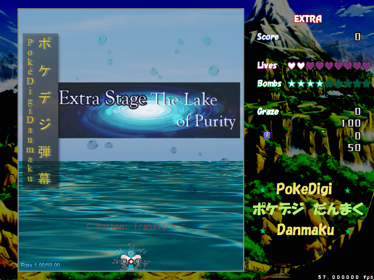

POKÉDIGIDANMAKU
RELEASE INFORMATION
Release Date: December 25, 2013
Download: Download RC-7 (December 25, 2013)
Official Post - contains previews, game playthrough videos, and release posts + old version downloads
GAMEPLAY AND SYNOPSIS
PokéDigiDanmaku is a 6 Stage + Extra Touhou-esque vertically scrolling shmup featuring Veemon as the player character. Veemon is able to swap between different forms, each with their own strengths and weaknesses, and this is the key to the game. There are six base difficulties (Very Easy, Easy, Normal, Hard, Lunatic, and Overdrive).
In PokéDigiDanmaku, follow Veemon on his journey through the mysterious unknown world that lies before him!
ADDITIONAL NOTES
PokéDigiDanmaku was my primary project in Danmakufu 0.12m and was an integral part of developing my own coding style and creating my 0.12m system. However, I will let the official post and the release post do most the talking - they sum up the entire project. Please do read the release post, as it contains all of the emotions that accompanied the uneventful release of this game.
Overall, making PDD was a really interesting and valuable experience for me. Terrible lack of plot and poor planning aside, it's a pretty solid game. It may not have the fanfare or quality of the work of someone more experienced, but it was what got me on the path of "I can do this and therefore, I will." It's system is simple, its danmaku solid, albeit completely unbalanced, and the item spawn patterns are both confusing and elegant at the same time.
LEGAL AND CREDITS
Pokémon is owned by Nintendo. Digimon is owned by Digimon (the company). Various resources in this game are not original - music comes from a variety of Pokémon sources included but not limited to games, etc.
I do not and will not allow unauthorized redistribution of this game and/or use of original code/assets without express permission. This game is free and will remain so, but I prohibit parodies the game that use the original assets and/or code without express permission from the artist(s) and/or me, respectively.